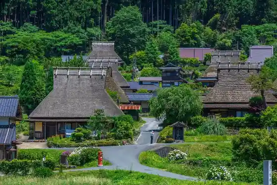
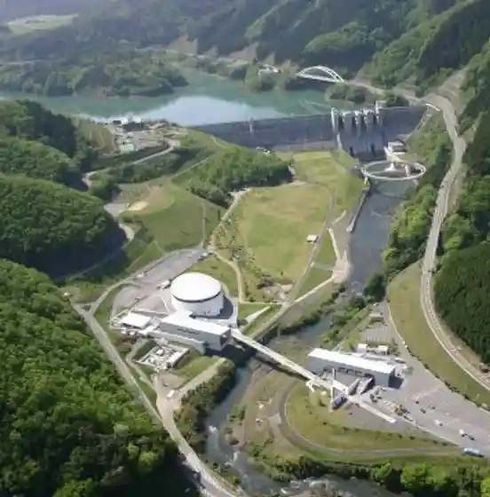
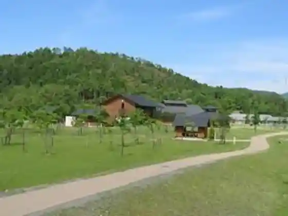
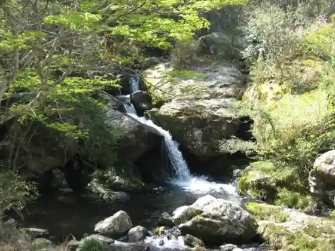

Reja & Supa Resort ASOBIYUKU Kyoto Ruri Kei Onsen
Nantan, Kyoto · 0771-65-5001 · Official / source link
Kayabuki Village
Nantan, Kyoto · 0771-75-1906 · Official / source link

Roadside Station Supuringusu Hiyoshi
Nantan, Kyoto · 0771-72-1526 · Official / source link

Hapi Ro ! no Mori Kyoto (Kyotofuritsu Fumin no Mori Hiyoshi)
Nantan, Kyoto · 0771-72-1339 · Official / source link

Kyotofuritsu Ruri Kei Nature Park
Nantan, Kyoto · 0771-68-0050 · Official / source link

Hamingubado Tsuten Mizumi
Nantan, Kyoto · 0771-65-5022 · Official / source link
Roadside Station Miyama Fureai Plaza
Nantan, Kyoto · 0771-75-5300 · Official / source link
Kyoto Irumineshon (Shinasutajiahiruzu)
Nantan, Kyoto · 0771-65-5001 · Official / source link
Roadside Station Kyoto Shinko Etsu Village
Nantan, Kyoto · 0771-68-1100 · Official / source link
Matabe
Nantan, Kyoto · 0771-77-0258 · Official / source link
Hiyoshi Dam Infogyararii
Nantan, Kyoto · 0771-72-0171 · Official / source link
Miyama Town Shizen Bunka Village Kajika So
Nantan, Kyoto · 0771-77-0014 · Official / source link
Kyotofuritsu Ruri Kei Shonen Nature no Ie (Guriinparu Ruri Kei)
Nantan, Kyoto · 0771-65-0190 · Official / source link
GRAX PREMIUM CAMP RESORT Kyoto Ruri Kei
Nantan, Kyoto · 0771-65-5001 · Official / source link
Oyamatsumi Shrine
Nantan, Kyoto · 0771-68-0057 · Official / source link
Fusai Tera
Nantan, Kyoto · 0771-65-0686 · Official / source link
Nantan Tourism Association
Nantan, Kyoto · 050-1724-4070 · Official / source link
GRAX HANARE Kyoto Ruri Kei
Nantan, Kyoto · 0771-65-5001 · Official / source link
Niji no Mizumi Patagorufu Ba
Nantan, Kyoto · 0771-75-0991 · Official / source link
Mongaku Fureai Park
Nantan, Kyoto · 0771-42-5366 · Official / source link
Miyama no Megumi Gyunyu Workshop
Nantan, Kyoto · 0771-75-0815 · Official / source link
Hiyoshi Foresuto Resort Yama no Ie
Nantan, Kyoto · 0771-72-3535 · Official / source link
O Shokuji Tokoro Kitamura
Nantan, Kyoto · Official / source link
Ippan Shadanhojin Nantan Miyama Kanko Machizukuri Kyokai
Nantan, Kyoto · 0771-75-1906 · Official / source link
Kyoto Taishaku Ten
Nantan, Kyoto · 0771-42-3315 · Official / source link
Mei San Kashi Tokoro (Kome Gi Fukuju Do)
Nantan, Kyoto · 0771-42-2245 · Official / source link
Sonobe Castle Ruins
Nantan, Kyoto · 0771-62-0051 · Official / source link
Seigen Tera
Nantan, Kyoto · 0771-42-3743 · Official / source link
Miyama Ashi Nama Yama no Ie
Nantan, Kyoto · 0771-77-0290 · Official / source link
Sonobe Byu Hotel
Nantan, Kyoto · 0771-62-1481 · Official / source link
Oi Kawa no Uotsuri Ri
Nantan, Kyoto · 0771-72-1178 · Official / source link
Miyama Folk Museum
Nantan, Kyoto · 0771-77-0587 · Official / source link
Miyama Kawa no Uotsuri Ri
Nantan, Kyoto · 0771-75-0210 · Official / source link
Kyo Yuba Tokoro Sei Ie
Nantan, Kyoto · 0771-75-1698 · Official / source link
Tatsuoki Tera
Nantan, Kyoto · 050-1724-4070 · Official / source link
Nantan Hiyoshi Sogo Undo Plaza
Nantan, Kyoto · 0771-68-0035 · Official / source link
Tourist Farm Ko Wa Land
Nantan, Kyoto · 0771-77-0330 · Official / source link
Oi Kawa Green Park
Nantan, Kyoto · 0771-42-5484 · Official / source link
Chiisana Ai Art Museum
Nantan, Kyoto · 0771-77-0746 · Official / source link
Kashikiri Furo Ryokan Kobushi So
Nantan, Kyoto · 0771-65-5001 · Official / source link
Hase Undo Plaza
Nantan, Kyoto · 0771-75-1773 · Official / source link
Kuhon Tera
Nantan, Kyoto · 0771-62-3704 · Official / source link
Yukijirushi Megumiruku Kyoto Kojo
Nantan, Kyoto · 0771-43-2150 · Official / source link
Miyama Ebisuzzu Garden Kafe
Nantan, Kyoto · 0771-75-2123 · Official / source link
Minshuku Miyama
Nantan, Kyoto · 0771-75-0535 · Official / source link
Kafe Bi Tamago
Nantan, Kyoto · 0771-77-0569 · Official / source link
Ono Damu Park
Nantan, Kyoto · 0771-75-9110 · Official / source link
Yagi Baioekorojii Center
Nantan, Kyoto · 0771-43-1128 · Official / source link
Miyama EISA
Nantan, Kyoto · 0771-75-5125 · Official / source link
Sato no Gohobi Miyama Do
Nantan, Kyoto · Official / source link
Kasuga Shrine
Nantan, Kyoto · 0771-68-0057 · Official / source link
Namami Tenmangu Shrine
Nantan, Kyoto · 0771-62-0535 · Official / source link
NIPPONIA Miyama Tsurugaoka Yama no Sato Hotarubi (HOTARUBI)
Nantan, Kyoto · 0120-203-099 · Official / source link
Ryori Ryokan Yamazato Ryori Isobe
Nantan, Kyoto · 0771-75-0218 · Official / source link
Ko Minka THYME
Nantan, Kyoto · 080-9012-6071 · Official / source link
Kafegyararii Ayahana
Nantan, Kyoto · 0771-77-9038 · Official / source link
JR Hiyoshieki Rentasaikuru
Nantan, Kyoto · 0771-68-0019 · Official / source link
Nantan Kokusaikoryu Hall
Nantan, Kyoto · 0771-63-1777 · Official / source link
Nantan Hiyoshi Town Local History Museum
Nantan, Kyoto · 0771-68-0069 · Official / source link
Nishi Jo Tera
Nantan, Kyoto · 0771-75-0355 · Official / source link
Ma Ki Shrine
Nantan, Kyoto · 0771-62-1169 · Official / source link
Miyama Omoshiro Nomin Kurabu
Nantan, Kyoto · 0771-77-0884 · Official / source link
Taji Shrine
Nantan, Kyoto · 050-1724-4070 · Official / source link
Kuramoto Chokubai Mise Miyama Michi (Sake no Kan) Miyama Kura
Nantan, Kyoto · 0771-77-0007 · Official / source link
Saikyo Miyako Paraguraida Renshujo
Nantan, Kyoto · 090-2285-7243 · Official / source link
Ryori Ryokan Makura Kawa Ro
Nantan, Kyoto · 0771-77-0003 · Official / source link
Saiko Tera
Nantan, Kyoto · 0771-42-3417 · Official / source link
Nantan Tatebumi Ka Museum
Nantan, Kyoto · 0771-68-0081 · Official / source link
Bi Juhachi
Nantan, Kyoto · 0771-75-5125 · Official / source link
Jogan Tera
Nantan, Kyoto · 0771-76-0013 · Official / source link
GOMA Kyotominami Tan Guest House
Nantan, Kyoto · 080-6596-2947 · Official / source link
Kyu Ya
Nantan, Kyoto · 0771-77-0550 · Official / source link
Karato Gorge
Nantan, Kyoto · 0771-75-1906 · Official / source link
KAYA Villa
Nantan, Kyoto · 0771-75-5125 · Official / source link
CASA Miyama
Nantan, Kyoto · 070-4414-5543 · Official / source link
Fumon In
Nantan, Kyoto · 0771-72-0805 · Official / source link
NIPPONIA Miyama Tsurugaoka Yama no Sato Taimatsu (MATSUAKARI)
Nantan, Kyoto · 0120-203-099 · Official / source link
Tauta Sha
Nantan, Kyoto · 0771-77-0509 · Official / source link
Kigusuriya
Nantan, Kyoto · 0771-76-0015 · Official / source link
NIPPONIA Miyama Tsurugaoka Yama no Sato Mizuoto (MIZUOTO)
Nantan, Kyoto · 0120-203-099 · Official / source link
Kenko Yasai City
Nantan, Kyoto · 0771-75-9110 · Official / source link